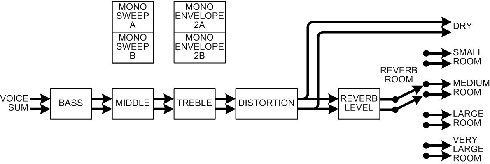

Instrument architecture
All voices that are playing the same sound belong to the same virtual instrument. From the keyboard, you can play on two instruments, called the Main and Link, and each USB device port MIDI input channel can also play on a separate instrument.
The stereo outputs of all voices belonging to a particular instrument are summed together, and then processed further. The instrument architecture looks like this:

The BASS, MIDDLE and TREBLE modules are stereo tone controls on the combined sound from all voices playing on that instrument. The sliders on the panel adjust the levels of these tone controls for the Main instrument, but these are actually parameters in the program, not master tone controls on the final output. While SET SPLIT is flashing, the sliders instead adjust the bass, middle, and treble frequencies, and the TUNE slider adjusts the middle resonance.
The DISTORTION module is also controlled by an extended parameter in the program.
Reverberation is controlled by a level control and a room select, so the output always goes to the dry output, and also goes to one of the rooms. These choices are normally performance controls generated by global parameters, but there are extended program parameters that can override this, in case a particular sound always needs particular reverb settings.
Finally, the instrument also includes some control signal generation:
- It generates two sweep phases, for channel A and B, that are common to all voices. When one of the mono Sweep modes is selected, the voices get their sweep phases from the instrument. This is useful for creating a slow sweep that remains coherent even when playing staccato notes.
- It generates two envelopes, for channel A and B, that are common to all voices. When one of the mono Envelope 2 modes is selected, the voices copy the envelope from the instrument. This is useful for simulating a Hammond percussion envelope.